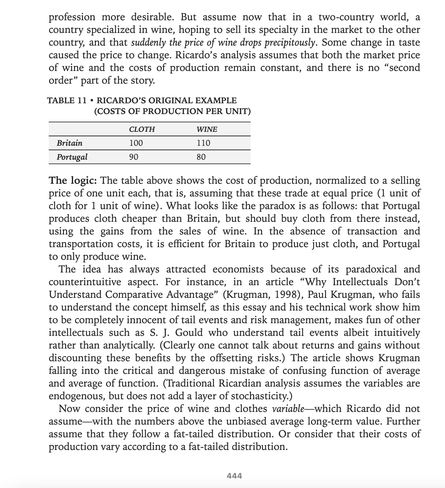
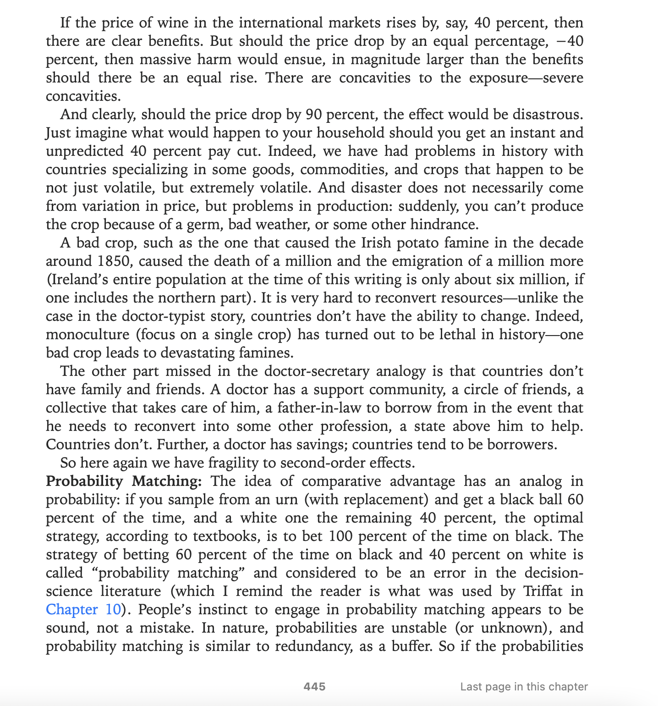
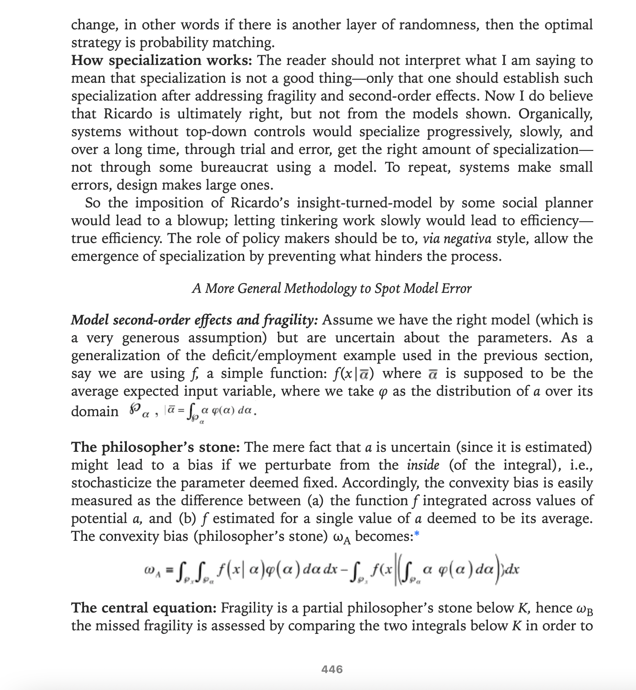
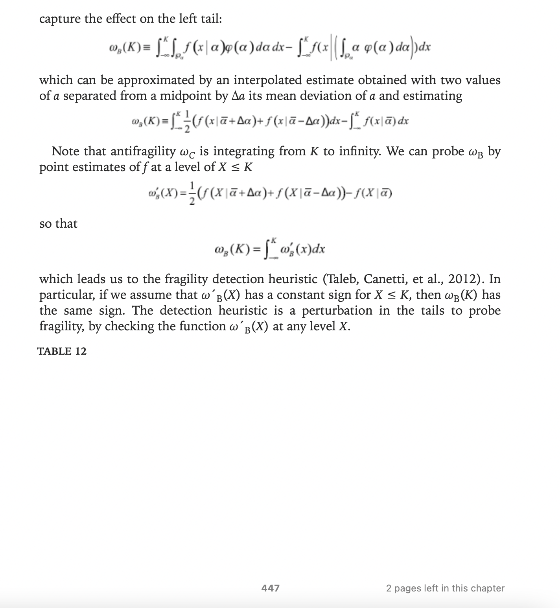

Since the words “fragile”, “antifragile” and “robust” or “resilient” will appear in this post and you might not be aware of how they’re used in this context or you might confuse antifragile for robust or resilient like many people do, just remember:
- fragile is what depends on the absense of change (or shocks or volatility or randomness or stress)
- antifragile is what benefits from change.
- robust or resillient is what is unaffected by change
1 Second-order effects that fail over-specialization
In the Appendix II of Antifragile, Nassim Taleb explains why the model used to push for extreme specialization makes the system fragile when second-order effects of price and supply shocks are taken into account.





2 Some more real-world consequences of over-specialization
In “Why Didn’t We Test Our Trade’s ‘Antifragility’ Before COVID-19?”, Joe Norman and Gene Callahan add:
[…] [C]ollapses due to over-specialization, prompted by international agencies [World Bank and IMF?] advising developing economies based on naive comparative-advantage analysis, have happened all too often. For instance, a number of African economies, persuaded to base their entire economy on a single good in which they had a comparative advantage (e.g, gold, cocoa, oil, or bauxite), saw their economies crash when the price of that commodity fell. People who had formerly been largely self-sufficient found themselves wage laborers for multinationals in good times, and dependents on foreign charity during bad times.
While the case for extreme specialization in production collapses merely by letting prices vary, it gets even worse for the “just specialize in the single thing you do best” folks once we add in considerations of pandemics, wars, extreme climate change, and other such shocks. We have just witnessed how relying on China for such a high percentage of our medical supplies and manufacturing has proven unwise when faced with an epidemic originating in China.
On a smaller scale, the great urban theorist Jane Jacobs stressed the need for economic diversity in a city if it is to flourish. Detroit’s over-reliance on the automobile industry, and its subsequent collapse when that industry largely deserted it, is a prominent example of Jacobs’ point. And while Detroit is perhaps the most famous example of a city collapsing due to over-specialization,it is far from the only one.
3 Solution - be exposed to random shocks
Norman and Callahan talk about a solution to this problem inspired by “chaos engineering” tools which are often used in the tech industry. They describe the concept using Netflix’s Chaos Monkey as an example:
On April 21, 2011, the region of Amazon Web Services covering eastern North America crashed. The crash brought down the sites of large customers such as Quora, Foursquare, and Reddit. It took Amazon over a week to bring its system fully back online, and some customer data was lost permanently.
But one company whose site did not crash was Netflix. It turns out that Netflix had made themselves “antifragile” by employing software they called “Chaos Monkey,” which regularly and randomly brought down Netflix servers. By continually crashing their own servers, Netflix learned how to nevertheless keep other portions of their network running. And so when Amazon US-East crashed, Netflix ran on, unfazed.
Norman and Callahan address the concern that the act of countries subjecting flow of goods to random shocks, or for that matter any type of shock in terms of banning trade, in the present state of affairs presents an institutional barrier.
If Freedonia suddenly bans the import of goods from Ruritania, even for a week, Ruritania is likely to regard this as a “trade war,” and may very well go to the WTO and seek relief. However, the point of this reorientation of trade policy is not to promote hostility to other countries, but to make one’s own country more resilient.
But they offer a solution that will allow countries to implement their solution without violating any WTO obligations or retaliation by other countries:
A possible solution to this problem is that a national government could periodically, at random times, buy all of the imports of some good from some other country, and stockpile them. Then the foreign supplier would have no cause for complaint: its goods are still being purchased! But domestic manufacturers would have to learn to adjust to a disappearance of the supply of palm oil from Indonesia, or tin from China, or oil from Norway.
I guess a country can devise a procedure similar to the following to avoid rent-seeking as much as possible:
- Pre-decide the frequency and extent of these shocks, while keeping them as “good agnostic” as possible (without leading to something to the tune of self-inflicted extinction).
- Generate a random seed, using a publicly verifiable process, that can be fed into RNGs to select the number of goods and countries to be subject to the supply shock, the exact goods and countries to be selected and the extent of the government buyout per good or country.